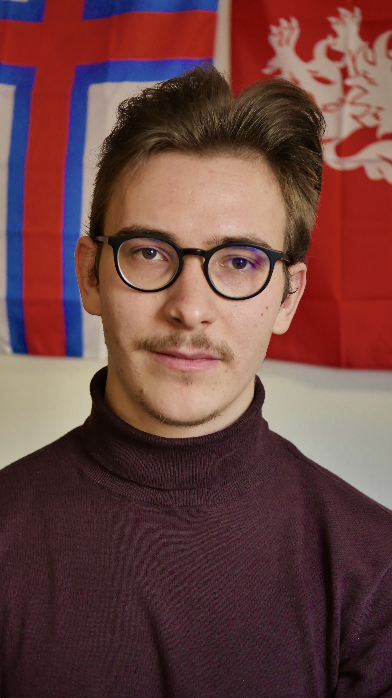
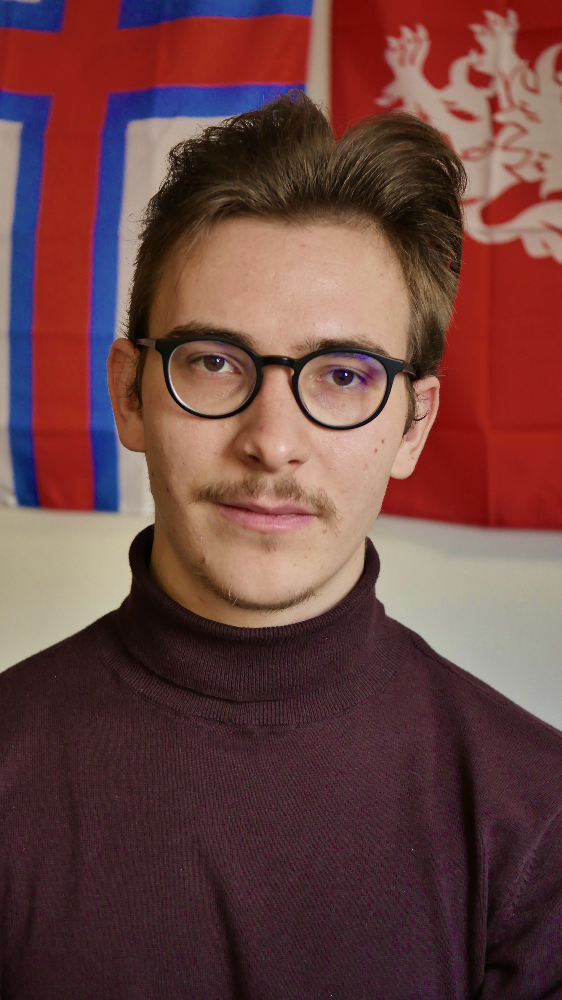
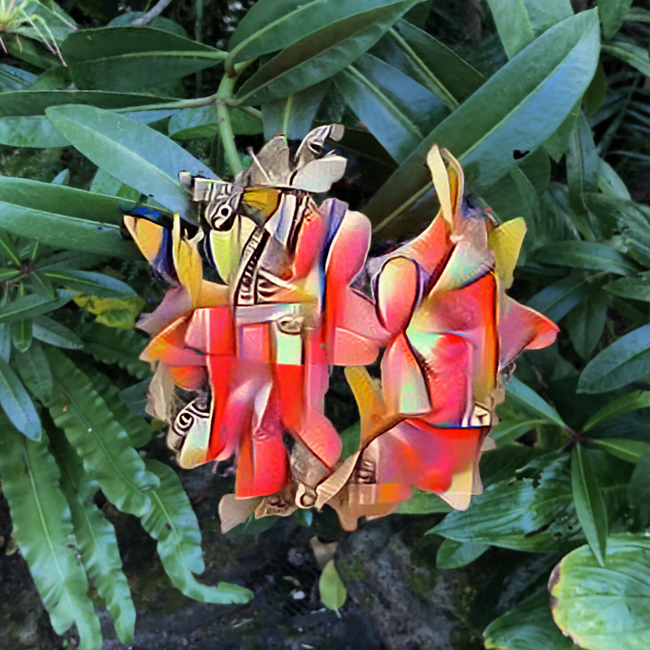
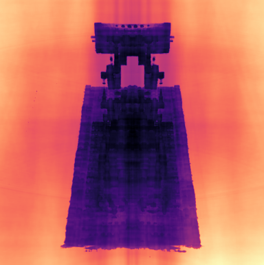
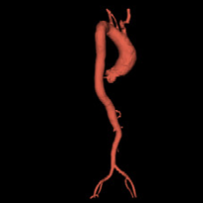

|  | Lukas Radl University Project Assistant Graz University of Technology 


|
|  | Lukas Radl University Project Assistant Graz University of Technology
|
| I am a University Project Assistant at Graz University of Technology, focusing on Inverse Rendering and 3D Scene Representations. Previously, I obtained my BSc and Dipl.-Ing. (equivalent to MSc) at Graz University of Technology in the field of Computer Science. In addition to my research, I am also involved in several undergraduate and graduate courses focusing on Computer Graphics. |
|  |
LAENeRF: Local Appearance Editing of Neural Radiance Fields Lukas Radl, Michael Steiner, Andreas Kurz, Markus Steinberger. arXiv Preprint arXiv:2312.09913. 2023. [Paper] [Paper Website] [Code] |
|  |
Analyzing the Internals of Neural Radiance Fields Lukas Radl, Andreas Kurz, Markus Steinberger. arXiv Preprint arXiv:2306.00696. 2023. [Paper] [Paper Website] [Code] |
|  |
AVT: Multicenter aortic vessel tree CTA dataset collection with ground truth segmentation masks Lukas Radl, Yuan Jin, Antonio Pepe, Jianning Li, Christina Gsaxner, Fen-hua Zhao, Jan Egger. Data in Brief, (40)107801. 2022. [Paper] [Dataset] |
|
Real-Time Graphics • Real-Time Special Effects in a Vulkan-based Framework. • Exercise Organization, Grading and Support. |
|
Computer Vision • Basic Computer Vision. 500+ students. Assignment Interviews, Question Hours, Forum Support and Reference Solutions. Computer Graphics • Basic Computer Graphics. 500+ students. Assignment Interviews, Question Hours, Forum Support and Reference Solutions. |
|
Real-Time Graphics† • Real-Time Special Effects, Shader Programming in Diligent Engine. 100+ students. Question Hours, Forum Support, Reference Solutions & Grading of submitted exercises (Code and PDF). |
|
Mathematical Principles in Visual Computing† • Projective Geometry in Computer Vision and Computer Graphics. 20+ students. Question Hours, Forum Support and Grading of submitted exercises (Code & PDF). |
|
† denotes graduate courses. |